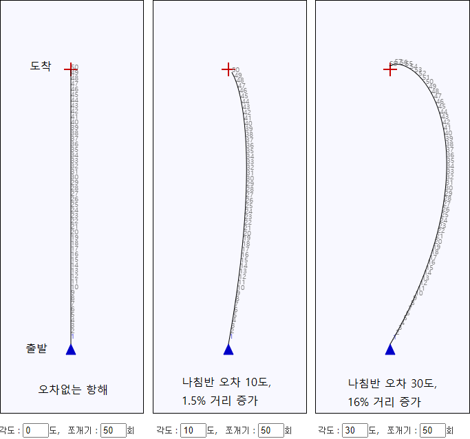
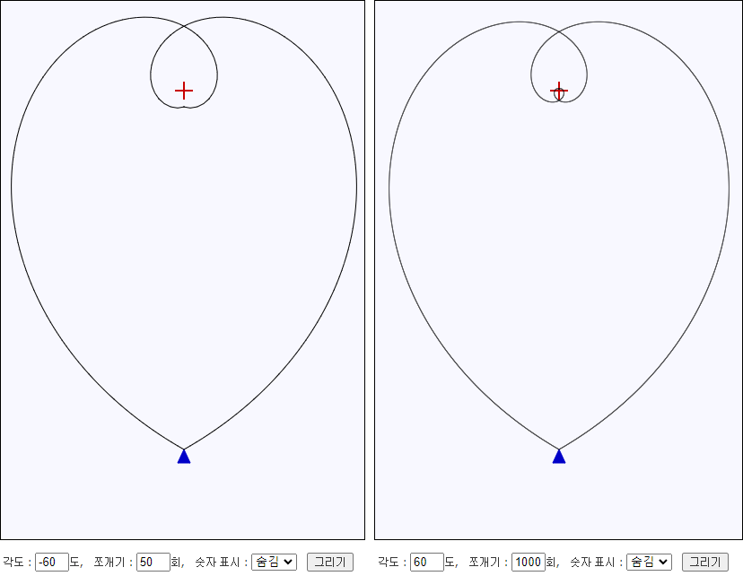

| 효율적인 항해를 하고 싶어! |
|---|
기울어진 각도 : 도,
쪼개기 : 회,
숫자 표시 :
도입
나침반을 이용해서 목적지까지 찾아가는 항해를 할 경우, 나침반에 오차가 있을 경우 목적지까지 찾아갈 수 있을까?
목적지까지 가기 위해 나침반을 처음에 한 번만 보고 계속 직진하는 경우엔 오차가 크면 목적지에서 많이 벗어나게 된다.
하지만, 중간중간 목적지까지의 방위각을 확인한다면 나침반에 웬만큼 오차가 있어도 목적지에 다가갈 수 있다.
예를들어 10도 오차가 있는 나침반일 경우 1.5% 정도, 30도 오차가 있는 나침반이어도 16% 정도 더 멀리 돌아갈 뿐이다.
아래 그림은 출발지점에서 목적지까지 거리의 1/50(예를들어 목적지까지 10km인 경우, 200m) 만큼씩 이동후 나침반 확인하기를 반복하는 경우이다.

오차가 있는 나침반의 오차를 정확히 알 경우, 오차 보정하면 최단 경로로 항해할 수 있을 것이다.
나침반의 기준이 되는 자북이 진북이나 도북과도 차이나므로 방위각은 자북 기준으로 잡아야할 것이다.
오차없는 나침반을 사용하고, 방위각을 정확히 알고, 해당 방위각으로 정확히 항해하여도 최단 경로로 항해하기는 어렵다.
그 이유는 조류 방향과 세기가 계속 변하기 때문이다.
결국, 내가 가고자하는 방향과 실제 이동중인 방향을 수시로 점검하여 방위각을 지능적으로 보정할 필요가 있다.
나침반의 오차를 모르더라도 일정한 방향으로 진행한다면 지능적 보정도 가능할 듯하다.
재미
기울어진 각도를 60도로 하면 재밌는 그림을 만들 수 있다. 심장(하트라고도 불림) 모양을 만들 수 있을 듯하여 숫자를 조정해가며 시도하다가 아래와 같이 재밌는 심장 모양을 그리게 되었다. 60도와 -60도로 번갈아 그려주는 것이 요령이며, 쪼개기 횟수를 조정하여 이중심장과 삼중심장을 만들었다.
